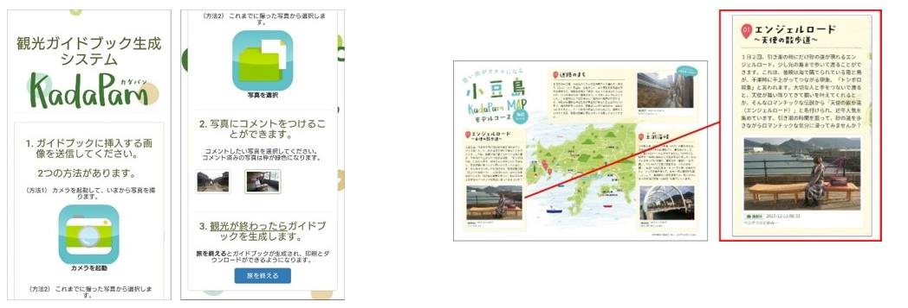
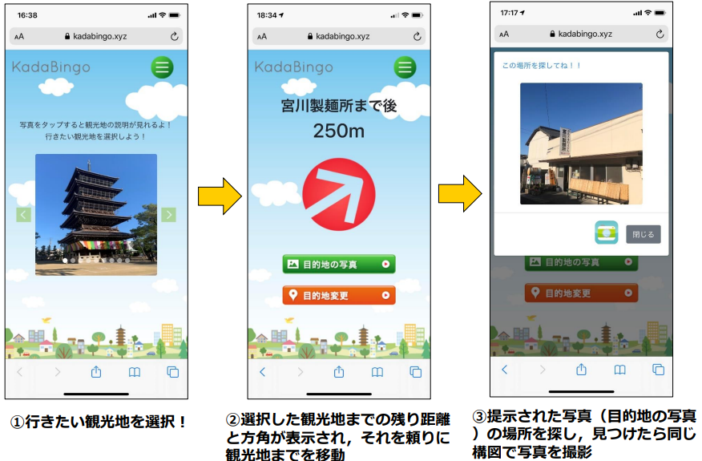
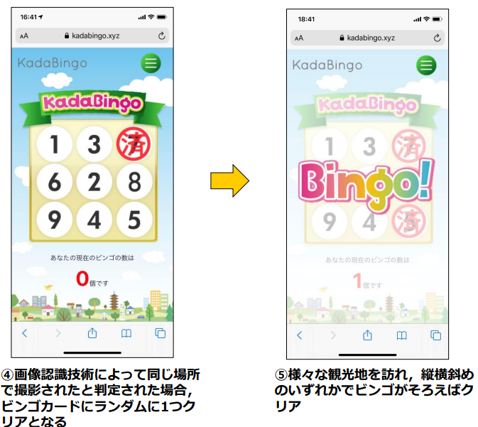
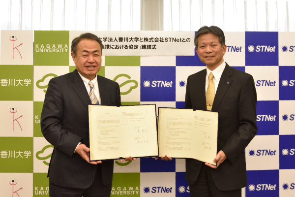

■地域協働について
情報コースでは、カダビンゴやカダパンなど地域課題の解決や地域活性化のためのシステム開発に関する研究を行っており、実社会とつながった実践的な学びが可能です。また、講義の一環として、STNetの会社を見学させてもらえる機会もあり、企業の現場を知ることで、より深く情報技術の活用について学ぶことができます。
観光支援システムの開発

カダパンは、AIによる画像認識技術を使って、観光ガイドブックに掲載された写真と観光客が現地で撮影した写真を自動的に照合し、写真を置き換え、プリンタから印刷できる仕組みになっています。ゲーミフィケーションの仕組みも取り入れており、写真を集めることで“観光スタンプラリー”のような楽しさを体験できる設計になっています。楽しみながら地域を巡った記録が共有されることで、観光地への誘客につながっています。
カダパン


カダビンゴは、観光地の写真とビンゴカードを提示し、観光客に提示された観光地で同じ構図の写真を撮影させます。画像認識技術を使って同じ場所で撮影されたと判定されると、ビンゴカードのマスが一つ埋められる仕組みになっていて、カダパン同様、ゲーミフィケーションを取り入れたシステムになっています。
カダビンゴ
STNetとの連携協定

香川大学と株式会社STNetは、地域活性化を目的とした包括連携協定を2018年2月1日に締結しました。
この協定では、最新のICT技術を活用した共同研究・人材育成・観光支援などを通じ、地域の課題解決に取り組みます。すでに、小豆島では観光タクシーを活用した情報配信システムの研究が進行しており、地域観光との連携も始まっています。
今後もICTを活用した地域貢献・教育支援・セミナー開催など、多方面で協力を深めていく予定です。
STNet共同協定